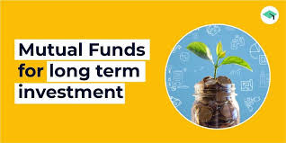

Every mutual fund investment carries some amount of risk, and no AMC can guarantee the safety of capital as your returns are linked to the market. Mutual Fund Schemes are not guaranteed or assured return products.
is mutual funds safe for long-term?
Mutual funds are largely a safe investment, seen as being a good way for investors to diversify with minimal risk. But there are circumstances in which a mutual fund is not a good choice for a market participant, especially when it comes to fees.

Best Long Duration Mutual Funds?
Long Duration mutual funds refer to funds that have excellent potential and the ability to provide high returns. However, these funds are very volatile in nature and come with high risks. When you take such a Long Duration mutual fund, you will be required to actively and thoroughly review the performance of these funds from time to time. This will help you be aware of how your fund is doing in the market.
These Long Duration mutual funds typically provide great dividends to an investor. If you are someone who is willing to take a high risk in order to receive good returns, then you can choose such a fund.
Long Duration mutual funds buy shares of different companies and invest the investor's money into those shares based on certain criteria.
By equity, we mean ownership. So when an individual or an institution buys stocks or shares of a company which is basically a borrower, then the individual acquires ownership in the company based on the number of units of stock or shares bought by him/her. Equity mutual funds give returns based on the market conditions. Like debt funds, they do not provide a fixed return over a period of time, but the return is dependent on the performance of the company on a daily basis. Hence the market value of equity mutual funds changes on a daily basis.